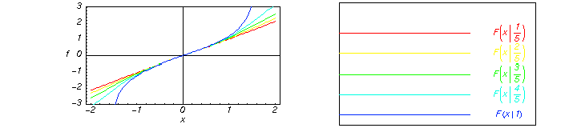
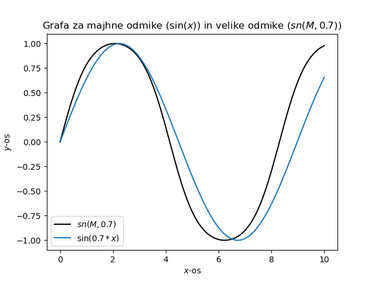

Mafija
Table of Contents
1. Specialne funkcije
Elementarne funkcije, zgodovinsko določene. “Lepo” se obnašajo. Specialne funkcije so tiste, “katerih ne najdeš na kalkulatorju”.
Integrali, ki niso izrazljivi z elementarnimi funkcijami (integrali).
Integralski sinus in cosinus
\begin{align*} \label{eq:2} Si (x) &= \int\limits _0 ^x \frac{\sin (t)}{t} \, dt \\ Ci (x) &= \int\limits _x ^{\infty} \frac{\cos (t)}{t} \, dt \\ Li (x) &= \int\limits _0 ^x \frac{1}{\ln (t)} \, dt \\ Ei (x) &= \int\limits _{-\infty} ^x \frac{e^{t}}{t} \, dt \\ S(x) &= \int\limits _0 ^x \sin(t^2) \, dt \\ C(x) &= \int\limits _0 ^x \cos(t^2) \, dt \\ Erf(x) &= \frac{2}{\sqrt{\pi}} \int\limits _{-\infty} ^x e ^{-t ^2} \, dt \\ \end{align*}2. Rešitve pogostih D.E.
2.1. Besslova funkcija (diferencialna enačba)
Besslova funkcija prvega reda \( J_{\alpha} (x) \) Besslova funkcija drugega reda \( Y_{\alpha} (x) \)
2.2. Airyjevi funkciji S2.3
Airyjevi funkciji, prvega reda \( Ai (x) \) in drugega reda \( Bi(x) \), sta funkciji, ki rešita diferencialno enačbo:
\begin{equation} \label{eq:4} \ddot{y} - xy = 0 \end{equation}
3. Rešitve pogostih transcendentnih enačb
Najprej definirajmo transcendentne funkcije. To so funkcije, ki jih ne moremo zapisati v polinomski obliki. Te funkcije “transcend” algebro in nosijo zato tako ime. Protipomenka transcendentnih enačb so algebraične enačbe.
\begin{align*} \label{eq:1} x &= e^{-x}; && \text{primer transcendentne enačbe} \\ x^5 - 3x + 1 &= 0; &&\text{primer algebraične enačbe} \end{align*}3.1. Lambertova funkcija W
Lambertova funkcija W (tudi funkcija \( \omega \)) oz. na kalkulatorju se jo tudi najde pod imenom product log(arithm) je obratna funkcija \( f(w) = w e^w \), kjer je \( w \) kompleksno število in \( e^w \) naravna eksponenta funkcija.
\begin{equation} \label{eq:5} y e^y = x \end{equation}Za vsak število \( k \) obstaja ena veja, označena z \( W_k (x) \), ki je kompleksna funkcija. Enačba \ref{eq:5} velja natanko tedaj, ko velja
\begin{equation} \label{eq:13} y = W_k (x) \end{equation}Če se ukvarjamo samo z realnimi števili, zadoščata veji \( W_0 \) in \( W_{-1} \).
3.2. \( \Gamma \) funkcija
Za več splošnih informacij \( \Gamma \) funkcije, glej skripto Mat3, Bukovšek.
\begin{equation} \label{eq:6} \Gamma (n) = \int\limits _0 ^{\infty} t^{n-1} e ^{-t} \,dt \end{equation}velja \( n! = \Gamma (n + 1)\), in \( n! = \int\limits _0 ^{\infty} t^n e^{-t}\).
Lahko reproduciramo Stirlingovo aproksimacijo?
\( \Gamma \) funkcijo in Stirlingovo aproksimacijo zapišemo kot
\begin{align} n! &\approx \sqrt{2 \pi n} \left( \frac{n}{e} \right)^n \\ \Gamma (n) &\approx \sqrt{\frac{2\pi}{n}} \left( \frac{n}{e} \right) ^n \end{align}Opazimo lahko, da sta aproksimaciji različni.
Poskusili bomo zamenjati vsoto z integralom logaritma \( n! \)
\begin{align} \label{eq:7} \ln(n!) &= \sum\limits _{k=1} ^n \ln(k) = \int\limits _1 ^n \ln(x) \, dx = n \ln (n) - n + 1\\ n! &\approx n^n e^{-n} e = e \cdot \left( \frac{n}{e} \right) ^n \end{align}Zmoti nas spodnja meja integrala, ki je \( 1 \) in ne 0. Sama aproksimacija je v redu, saj je vrednost \( e \approx 2.718 \), vrednost v Stirlingovi aproksimaciji pa je \( \sqrt{2 \pi} \approx 2.507 \). Zmanjka nam z našo aproksimacijo samo člen \( n \).
3.2.1. Povprečje
Integrand \( n! \) bomo aproksimirali z Gaussovo porazdelitvijo \( f(t) = t^n e^{-t} \approx A e^{- \frac{(t - \bar{t}) ^2}{2 \sigma ^2}} \), kjer je \( \bar{t} \) povprečje in \( \sigma \) standardna deviacija, ki ju znamu izračunati iz predmeta Verjetnost v fiziki.
\begin{align} \label{eq:8}Vrednost integrala je potem
\begin{align*} \int\limits_0^{\infty} t^n e^{-t} \, dt &\approx A \cdot \int\limits_{-\infty}^{\infty} e^{-\frac{(t - (n+1))^2}{2(n+1)^2}} && \text{Vrednost integrala je } \sqrt{2 \pi} \sigma \\ &= \sqrt{2 \pi} A \sigma = \sqrt{2 \pi} (n + 1) ^n e^{-(n+1)} \sqrt{(n + 1)} \\ &= \sqrt{\frac{2 \pi}{n+1}} (n+1)^{n+1} e^{-(n+1)} \end{align*}Če uvedemo novo spremenljivko \( u = n + 1 \), je enaka aproksimaciji kakor za \( \Gamma \) v \ref{}.
3.2.2. Maksimum
Sedaj poskusimo vzeti maksimalno vrednost Gaussove funkcije in ne povprečja. Za ekstrem odvajamo in je vrednost v maksimumu
\begin{equation} \label{eq:33} \frac{\partial t^n e^t}{\partial t} = 0 \implies t_0 = n \end{equation} \begin{align*} e^{- \frac{(t - \bar{t}) ^2}{2 \sigma ^2}} &\approx f(t) && /\ln \\ {- \frac{(t - \bar{t}) ^2}{2 \sigma ^2}} &\approx n \ln(t) - t && / \frac{\partial ^2 }{\partial t ^2} \\ -\frac{1}{\sigma ^2} &= \left. -\frac{n}{t ^2} \right |_{t = t_0} \\ \sigma ^2 = n \end{align*}Sedaj, ko vstavimo izračunane vrednosti, dobimo
\begin{equation} \label{eq:34} \sqrt{2 \pi}A \sigma = \sqrt{2\pi n} \left( \frac{n}{e} \right)^{-n} \end{equation}Z dvema različnima postopkoma smo sedaj dobili tako aproksimacijo za \( \Gamma \) kakor za \( n! \).
3.3. Normalizacija Gaussove funkcije
Iz 2. v 3. vrstico smo nadomestili kartezične koordinate s polarnimi koordinatami.
Vrednost sedaj korenimo in s tem dobimo normalizirano vrednost Gaussove funkcije. Če jo primerjamo z \( \Gamma \), kjer upoštevamo substitucijo \( t = \frac{u ^2}{2} \), je
\begin{equation} \label{eq:35} 2\int\limits_{0}^{\infty} e^{-t} \frac{dt}{\sqrt{2t}} = \sqrt{2} \Gamma (\frac{1}{2}) = \sqrt{2 \pi} \end{equation}Tako je vrednost \( \Gamma (\frac{1}{2}) = \sqrt{\pi} \).
Normalizacija Gaussove funkcije (\(N \text{ in } N^2\))
3.4. Riemannova \( \zeta \) funkcija
Riemannova \( \zeta \) funkcija je verjetno ena bolj slavnih funkcij. Iz nje izhaja tudi Riemannova domena, da imajo vse netrivialne ničle funkcije realni del enak \( \frac{1}{2} \).
Sama funkcija je za nas, fizike, zanimiva v kvantni teoriji polja in kvantni statistiki, kjer pogosto preko Riemannove \( \zeta \) funkcije pretvorimo izlimitirane integrale, v vrednosti, ki so nam obvladljive.
\begin{equation} \label{eq:9} \zeta (s) = \sum\limits _{n=1} ^{\infty} n^{-s}; \, \Re(s) > 1 \end{equation}Nekatere vrednosti te funkcije so
\begin{align*} \zeta (2) &= \frac{\pi ^2}{6} \\ \zeta (4) &= \frac{\pi ^4}{90} \\ \zeta (6) &= \frac{\pi ^6}{945} \end{align*}\( \zeta \) lahko zapišemo tudi v drugi obliki:
\begin{equation} \label{eq:10} \zeta (s) = \prod_{\text{praštevila}} \frac{1}{1 - p^{-s}} \end{equation}3.5. Asimptotske vrste
Asimptotske vrste je razvoj funkcije v vrsto, ki lahko divergira ali pa konvergira. V naših primerih pogosto divergirajo. Navkljub divergenci so lahko delne vsote relativno dobra aproksimacija funkcije ob dovolj velikem \( x \). Primer divergence, kjer se nekaj členov bliža podani funkciji, potem pa divergira, lahko vidimo na sliki.
Na grafu, kjer je minimum funkcije, je idealno število upoštevanih členov za najboljšo aproksimacijo \( \Gamma \) funkcije. Rdeče pike so za \( x = 2 \), kjer je najmanjša napaka za 14 členov, modre pike pa za \( x = 3 \), kjer je najmanjša napaka pri 20 členih.
Večina funkcij, na katere bi lahko tekom naše fizikalne kariere naleteli, so že poknjižene, v primeru pa, da slučajno naletimo na funkcijo, ki še ni, sami napišemo asimptotsko vrsto za dano funkcijo. Napaka za isto število členov se manjša s tem, ko gre \( x \) proti \( \infty \). Členi v aproksimaciji rastejo \( \approx \frac{n!}{x^n}\).
3.5.1. \( erf \) funkcija
Vzemimo za primer \( erf \) funkcijo za \( \left| x \right| < 1\), ki je definirana kot
\begin{equation} \label{eq:11} erf(x) = \frac{2}{\sqrt{\pi}} \int\limits _0 ^x e^{-t^2} \, dt \end{equation}Funkcijo aproksimiramo z vrsto
\begin{equation} \label{eq:36} erf(x) = \frac{2}{\sqrt{\pi}} \sum\limits _{n=0} ^{\infty} \frac{x^{2n +1}}{2n + 1} \frac{(-1)^n}{n!} \end{equation}Definiramo komplementarno funkcijo funkciji \( erf \) z oznako \( erfc \).
Vidimo lahko, kako vrsta začne divergirati, vendar je okoli 0 precej natačna.
\begin{align} \label{eq:12} erfc(x) &= 1-erf(x) \\ erfc(x) &= \frac{2}{\sqrt{\pi}} \int\limits _x ^{-\infty} e^{-t^2} \, dt \end{align}Funkcijo premaknemo tako, da velja \( t - x = u \)
\begin{align} \label{eq:14} &= \frac{2}{\sqrt{\pi}} e^{-x^2} \int\limits _0 ^{\infty} e^{-u^2} e^{-2ux};\, \text {nova spremenljivka } w = -2ux \\ &= \frac{2}{\sqrt{\pi}} e^{-x^2} \int\limits _0 ^{\infty} e^{w} \sum\limits _n \frac{(-u)^2}{n!} \, du, \, u = \frac{w}{2x} \\ &= \frac{2}{\sqrt{\pi}} e^{-x^2} \sum\limits _{n=0} ^{\infty} \frac{(2n)!(-1)^n}{(2x) ^{2n+1} n!} \end{align}člen \( e^{-x^2}\) je ovojnica, medtem ko iz prve vrstice v drugo vrstico razvijemo člen \( e^{-u^2}\).
V fiziki je to uporabno tako, da multipolno razvijemo. Potencial (porazdelitve naboja) \( \approx \frac{e}{r} + \frac{3p^2 r^2 - (pr)^2}{r^{3} + ... + r^5} \).
\begin{equation} \label{eq:15} \int\limits _{-\infty} ^{\infty} \frac{\rho}{\left| r + x \right|} \, dx = \int\limits _{-\infty} ^{\infty} \frac{\rho}{r(1+ \frac{x}{r})} = \int\limits _{-\infty} ^{\infty}(\frac{1}{r} + \frac{x}{r^3}...) \, dx \end{equation}Pogoje razvoja, narediš asimptotsko vrsto pri integraciji in ne pri razvoju vrste - pri razvoju vrste upoštevaš za majhne \(x\), pri integraciji pa \( x \to \infty \).
4. Eliptični integrali
Eliptični integrali so v splošnem integrali oblike
\begin{equation} \label{eq:37} \int \frac{A(x) + B(x) \sqrt{S(x)}}{C(x) + D(x) \sqrt{S(x)}} \, dx \end{equation}kjer so \( A(x), B(x), C(x), D(x) \) polinomi in \( S(x) \) je polinom 3 ali 4 potence. Bolj enostavneje se to zapiše kot
\begin{equation} \label{eq:38} \int R(w, x) \, dx \end{equation}kjer je \( R(w, x) \) racionalna funkcija odvisna od \( x \) in \( w \). \( w ^2 \) je funkcija odvisna od \( x \) in je kubična ali quartic. Funkcija \( R \) vsebuje vsaj eno liho potenco \( w \) in \( w ^2 \) nima ponovoljenih faktorjev.
Eliptični integrali nam ponudijo širšo paleto problemov, ki jih lahko rešimo, začenši z dolžino krivulje integrala, ki ni tako trivialna, kakor je pri krožnici. Kakor bomo videli v nadaljevanju nam eliptični integrali ponudijo tudi rešitev za matematična nihala odmikov za nemajhne kote. Problemi v elektromagnetizmu in gravitaciji se tudi opirajo na eliptične integrale za rešitve.
Povedali smo eliptična popolna (določena) integrala I. in II. vrste.
\begin{align} \label{eq:16} K(k) &= \int\limits_0^{\frac{\pi}{2}} \frac{1}{\sqrt{1 - k^2 \sin^2(\vartheta)}} \,d\vartheta && \text{Eli. integral I. vrste} \\ E(k) &= \int\limits_0^{\frac{\pi}{2}} \sqrt{1 - k^2 \sin^2(\vartheta)} \,d\vartheta && \text{Eli. integral II. vrste} \end{align}Kakor smo že prej omenili, je eden od primerov matematično nihalo za nemajhne odmike.
Začnemo z enačbo za gibanje, iz katere sledi energijska enačba in nato krožna frekvenca.
\begin{align*} ml ^2 \ddot{\vartheta} = - mgl \sin(\vartheta) \\ \frac{ml ^2 \dot{\vartheta}}{2} + mgl(1 - \cos(\vartheta)) = mgl (1 - \cos(\vartheta_0)) \end{align*}kjer je \( \vartheta_0 \) amplituda. Krožna frekvenca je tako
\begin{equation} \label{eq:40} \dot{\vartheta} = \sqrt{\frac{2g}{l} (\cos(\vartheta) - \cos(\vartheta_0))} \end{equation}Z upoštevanjem, da je \( \cos (\vartheta) = 1 - 2 \sin ^2 \left( \frac{\vartheta}{2} \right) \) dobimo enačbo
\begin{equation} \label{eq:41} \dot{\vartheta} = 2 \omega_0 \sin \left( \frac{\vartheta_0}{2} \right) \sqrt{1 - \frac{\sin ^2 \left( \frac{\vartheta}{2} \right)}{\sin ^2 \left( \frac{\vartheta_0}{2} \right)}} \end{equation}Sedaj imamo podan sledeč integral za četrt periode.
\begin{align*} \int\limits_{\vartheta_0}^0 \frac{1}{\sqrt{1 - \frac{\sin ^2 \left( \frac{\vartheta}{2} \right)}{\sin ^2 \left( \frac{\vartheta_0}{2} \right)}}} &= \frac{t_0}{4} (2\omega_0 \sin \left( \frac{\vartheta_0}{2} \right)) && \sin(u) = \frac{\sin ^2 \left( \frac{\vartheta}{2} \right)}{\sin ^2 \left( \frac{\vartheta_0}{2} \right)} \\ &= \int\limits_{\frac{\pi}{2}}^0 \frac{du}{\sqrt{1 - \sin ^2 (u) \sin ^2 (\frac{\vartheta_0}{2}) }} = \frac{t_0}{4} \omega_0 && k = \sin ^2 \left( \frac{\vartheta_0}{2} \right) \end{align*}Vrednost integrala \( K \) je torej
\begin{equation} \label{eq:42} K(\sin \left( \frac{\vartheta_0}{2} \right)) = \frac{t_0 w_0}{4} \end{equation}Vidimo lahko, da je eliptični integral I. vrste kar \( 1/4 \) nihajnega časa v odvisnosti od amplitude. Preverimo robne pogoje:
\begin{align*} K(0) = \frac{\pi}{2} && \text{za majhne odmike mora biti } t_0 w_0 = 2\pi \\ K(1) \to \infty \end{align*}
Na sliki \ref-to-be-made lahko vidimo grafa funkcij \( K(k) \) in \( E(k) \). Funkcija \( K(k) \) gre v \( \infty \), ko \( k \to 1 \).
Opomba: Za računanje in risanje funkcij s pomočjo Pythona, uporabimo knjižnico scipy.special in njena operatorja ellipk za popolni eliptični integral I. vrste in ellipe za popolni eliptični integral II. vrste.
4.1. Eliptični integrali kot vrsta
Eliptična integrala lahko zapišemo tudi kot vrsto.
\begin{equation} \label{eq:19} K(k) = \sum\limits _{n=0} ^{\infty} {-\frac{1}{2} \choose n} \frac{\sqrt{\pi}\Gamma(n+1/2)}{n!} (-k^2)^{n} = \frac{\Gamma}{2} \sum\limits_{n=0}^{\infty} \left( \frac{(2n)!}{(n!) ^2 2 ^{2n}} \right) ^2 k^{2n} \end{equation}Za hitro uporabo lahko izkoristimo tudi
\begin{equation} \label{eq:17} K(k) = \frac{\pi}{2 agm(1, \sqrt{1-k ^2})} \end{equation}kjer je \( agm \) aritmetično-geometrijska sredina. Ta formula nam omogočna hiter in enostaven postopek. Aritmetično in geometrijsko povprečje tuka izračunamo s pomočjo iteracije.
4.2. Nepopolni eliptični integral
Vrnimo se k primeru matematičnega nihala.
Za majhne odmike velja
\begin{equation} \label{eq:18} \omega_0 t = \int\limits_0^{\varphi} \frac{du}{\sqrt{1-u ^2}} = \arcsin (\varphi) \end{equation}Za velike odmike velja
\begin{equation} \label{eq:39} \omega_0 t = \int\limits_0^z \frac{du}{\sqrt{1 - k ^2 \sin ^2 (u)}} \end{equation}kjer velja, da je \( \sin (z) = \frac{\sin \left( \frac{\vartheta}{2} \right)}{\sin(\frac{\vartheta_0}{2})} \).
Izrazu za velike odmike se reče tudi nepopolni eliptični integral I. vrste. Označimo ga z \( F(z, k) \).
\begin{equation} \label{eq:43} F(z, k) = \int\limits_0^z \frac{du}{\sqrt{1-k ^2 \sin ^2 (u)}} \end{equation}Njegov inverz je
\begin{equation} \label{eq:44} z = am(\omega_0t, k) \iff \omega_0t = F(z, k) \end{equation}kjer je \( am \) /Jakobijeva amplituda.
Graf funkcije \( F \) izgleda

Iz te funkcije tako priredimo posplošitve \( \sin \) in \( \cos \) funkcij, ki se jima reče sinus amplitudinis (s periodo \( 4K(k) \)) in kosinus amplitudinis (z enako periodo). Poleg pa obstaja še delta amplitudinis (s periodo \( 2K(k) \)).
\begin{align} \label{eq:21} sn(\omega_0t, k) &= \sin(am(\omega_0t, k))\\ cn(\omega_0t, k) &= \cos(am (\omega_0t, k)) dn(\omega_0t, k) &= \left. \frac{d}{du} am(n, k) \right|_{u = \omega_0 t} \end{align}Podane funkcije spadajo v skupino Jakobijevih eliptičnih funkcij.
Nihalo z velikimi odmiki ima v maksimalni amplitudo bolj položno funkcijo. Graf nam kaže, kako bolj položen je sinus amplitudinis napram sinusu.

Opomba: Funkcija scipy.special.ellipj(u, m) sprejme parameter m, kar je array (na sliki je interval [0,10]), in u je argument, na grafu ima vrednost \( 0.7 \). Funkcija vrne funkcije v naslednjem vrstnem redu: sn(u, m), cn(u, m), dn(u, m).
Preglejmo še limite
\begin{align*} sn(u, 0) &= \sin(u) \\ sn(u, 1) &= \tanh(u) \\ cn(u, 0) &= \cos(u) \\ cn(u, 0) &= \frac{1}{\cosh(u)} \\ dn(u, 0) &= 1 \end{align*}5. Metoda stacionarne faze
Metoda stacionarne faze je osnovnih približkov asimptotske analize. Glavna ideja je, da se sinusoidni valovni izničijo zaradi hitro spreminjajoče faze. Sama metoda je aktualna v valovni optiki, kvantni mehaniki, Fourirerovih transformacijah in oscilatornih funkcijah.
Leva in desna stran, kjer so valovi gostejši, se izpovpreči v 0, medtem ko se nam faza v sredini faza ustavi in dopušča neničeln integral.
Integrali so oblike
\begin{equation} \label{eq:22} \int g(z) e^{i\varphi(z)} \, dz \end{equation}\( \varphi(z) \) je hitra funkcija (faza), \(g(z)\) počasna funkcija (amplituda). Njun produkt nam da tisto, kar kaže slika. Integral je različen od nič samo tam, kjer ima funkcija \( \varphi (z) \) ekstrem, torej velja \( \frac{\partial \varphi}{\partial z} = 0 \).
Po Taylorju razvijemo okoli ekstrema \( \varphi_0 \).
\begin{equation} \label{eq:23} \varphi \approx \varphi_0 + \frac{1}{2} \frac{\partial^2 \varphi}{\partial z^2} (z - z_0)^2 \end{equation}Predpostavimo, da je funkcija okoli točke \( z_0 \) stacionarna in se ne spremeni veliko. Tako veljaj \( g(z) \approx g(z_0) \).
\begin{align*} \label{eq:24} f &\approx \int\limits _{-\infty} ^{\infty} g(z_0) e^{i\varphi_0}e^{iq(z-z_0)^2} \, dz; && \text{kompleksen gauss}\\ &= \frac{e^{i\varphi_0} g(z_0)}{\sqrt{-2i q}} \int\limits _{-\infty} ^{\infty} e^{\frac{-u^2}{2}}\, du \\ &= \sqrt{\frac{\pi i}{q}} e^{i\varphi_0}g(z_0) \end{align*}Imamo kompleksno različico Gaussove funkcije, kjer je \( \frac{1}{2\sigma ^2} = iq \)
V primeru, da bi imeli več stacionarnih točk, kakor samo eno, lahko okrog vseh naredimo razvoj, vendar ima vsaka funkcija svoje vrednosti \( q_i \) in \( g(z_i) \), kjer je \( i \) število stacionarnih točk.
5.1. Zgled metode stacionarne faze
Za zgled uporabimo
\begin{equation} \label{eq:25} J_n (x) = \frac{1}{2\pi} \int\limits _{-\pi} ^{\pi} e^{i(nt - x\sin(t))} \,dt \end{equation}torej sta vrednost \( g(t) = 1 \) in \( \varphi(t) = nt - x\sin(t)\).
Pri velikih \( x \) imamo hitre oscilacije razen v stacionarni fazi.
\begin{equation} \label{eq:26} \varphi ' (t) = 0 = n - x\cos(t) \implies \cos(t_0) = \frac{n}{x} \end{equation}Prvi odvod nam poda ekstreme in vidimo, da imamo simetrično 2 ničli, saj mora biti ulomek na desni strani enak \( \pm \frac{\pi}{2} \).
\(q\) ima potem vrednost
\begin{equation} \label{eq:27} 2q = \varphi ''(t_0) = x\sin(t_0) = x \sqrt{1 - \left( \frac{n}{x} \right)^2} \approx x \end{equation}Koren zanemarimo, saj vsebuje \( x \) drugega reda.
Vrednost integrala \(J\) je potem:
\begin{align} \label{eq:28} J_n (x) &= \frac{1}{2\pi} \sqrt{\frac{\pi i}{q}} e^{i\varphi_0} g(t_0) \\ &= \frac{1}{2\pi} \sqrt{\frac{\pi}{x/2}} e^{i \pi/4} e^{i(nt_0 -x)} \\ &= \frac{1}{\pi} \Re(e^{i(nt_0 - x \sin(t_0) + \frac{\pi}{4})}) \cdot \sqrt{\frac{2\pi}{x}} \approx \sqrt{\frac{2}{\pi x}} \cos(x - n \frac{\pi}{2} - \frac{\pi}{4}) \end{align}Poglejmo si še bolj konkreten primer v optiki.
Imamo dve fazi. Prvo povzroči leča
\begin{equation} \label{eq:20} \varphi_{\text{leča}} = k(n-1) (- \frac{x^2}{2R}) \end{equation}, kjer je \( R \) krivinski radij, \( k = \frac{2\pi}{\lambda} \) valovno število.
Vzrok druge faze pa je razdalja od leče.
\begin{equation} \label{eq:29} \varphi_{\text{potovanje}} = k \left| r-r_0 \right| = kd \left(1 + \frac{(x -x_{0}) ^2}{2d^2} \right) \end{equation}S2.10 Električno polje svetlobe na mestu \(x_0\) je vsota prispevkov po leči.
\begin{align*} E(x_0) &= E_0 \int g(x) e^{i(\varphi_{\text{leče}} + \varphi_{\text{potovanja}})} \, dx \\ &= E_0 \int g(x) e^{ik\left((n-1)\frac{x ^2}{2R} + l \left( 1 + \frac{(x - x_0) ^2}{2l ^2} \right)\right)} \, dx \end{align*}\(g(x)\) je svetlobni profil, ki je odvisen od oblike leče in vhodne slike. Za valovno število velja \( k << 1 \), kar pmeni, da imamo kratko žarkovno limito.
\(\varphi \approx \varphi_0 - 2x \frac{x_0}{2d} + x^2(\frac{1}{2d} - \frac{(n-1)}{2R})\)
Stacionarna točka \(x_{max}\) je potem takem
\begin{equation} \label{eq:31} x_{max} = \frac{x_0}{1 - (n-1)/R} = \frac{x_0}{1 - \frac{d}{f}}; \, f = \frac{R}{n-1} \end{equation}, kjer je \(f\) goriščna razdalja.
\(x_0 = x_{max} (1 - \frac{l}{f}) \)
Potem znaša
\begin{equation} \label{eq:32} E = E_0 e^{i\varphi_0} g(x_{max})\sqrt{\frac{2\pi i}{k(1/d - (n-1)/R)}} \end{equation}\(g_{max}\) je vhodna slika, medtem ko je oklepaj v imenovalcu korena intenziteta narašča in divergira z bližanjem v gorišče. Zdi se nam, da \( x_{max} \) je izvor žarka, ne glede na to, katero točko preslika.
Obravnavani primer je primer stacionarne faze in je žarkovna limita v optiki.
S2.11 Aragojeva pega, vzorci na dnu bazena so ekstremi faze (različni svetlobni žarki pridejo na isto točko in interferirajo).